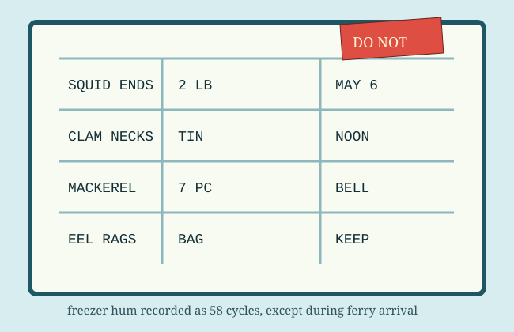

DO NOT CHIP ICE WITH FARE PUNCH

The freezer lid has four readable labels and one label made entirely of frost. This transcription was made while the compressor rested between hums.
Temperature note: the dial claims 18°F. The clerk writes “hard as chapel steps,” which is not a recognized unit but has been consistent since March.
Handling order: mackerel before bell, clams after ledger, squid only with blue pencil witness. Anything labeled KEEP belongs to the ferry cook unless the cook denies it loudly.